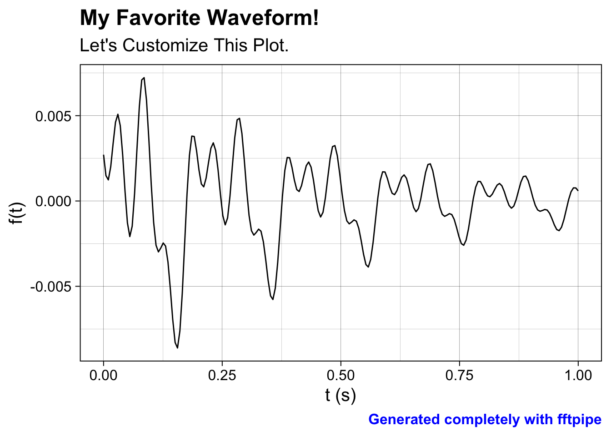
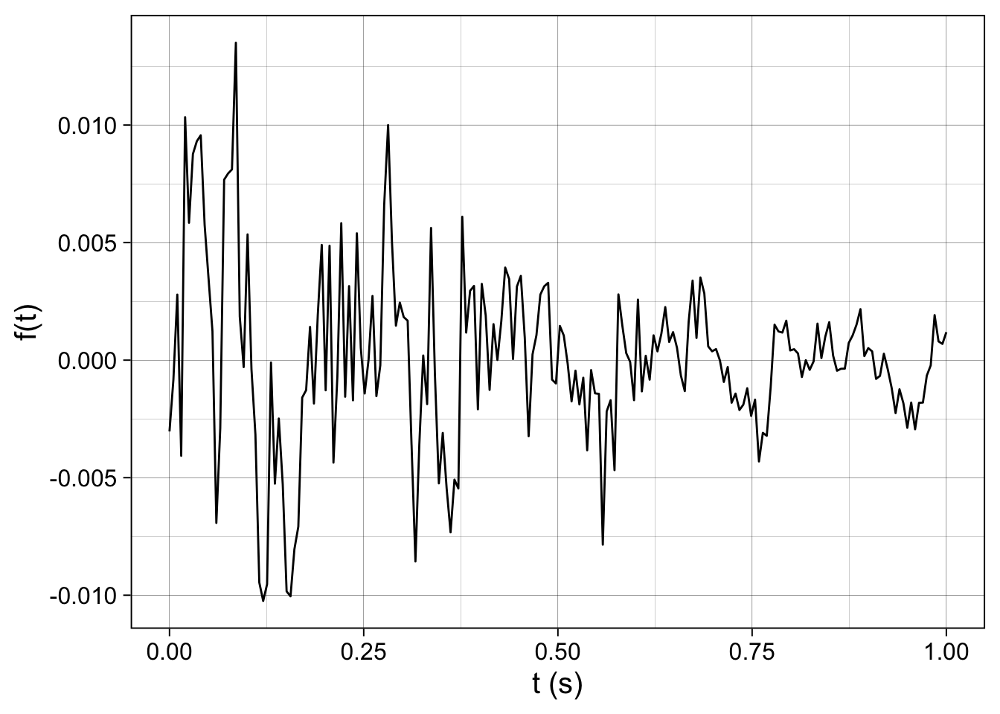
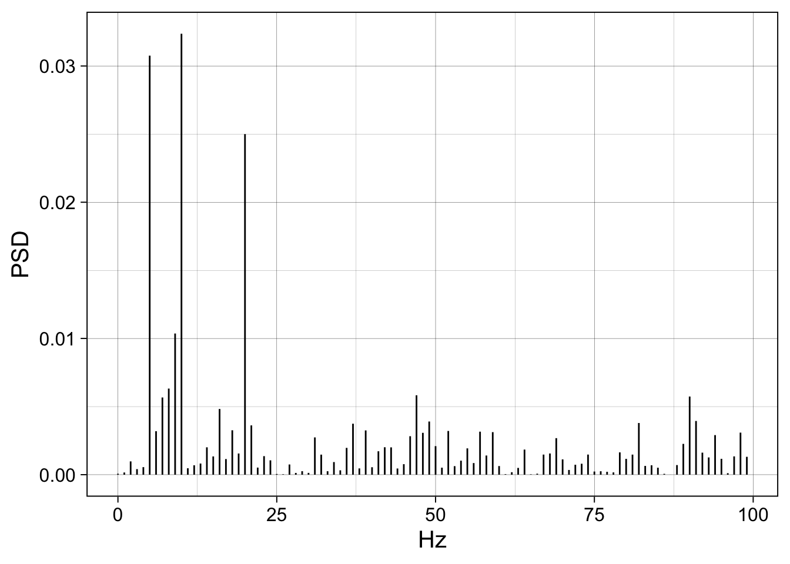
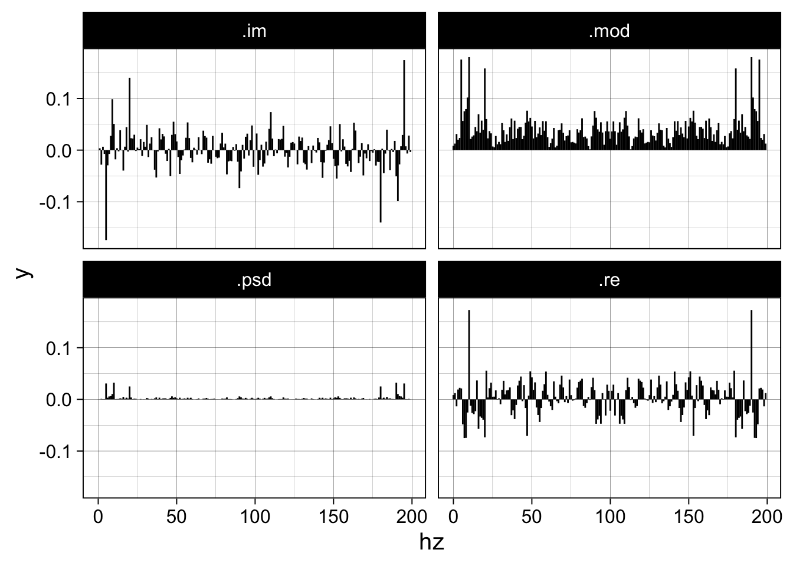
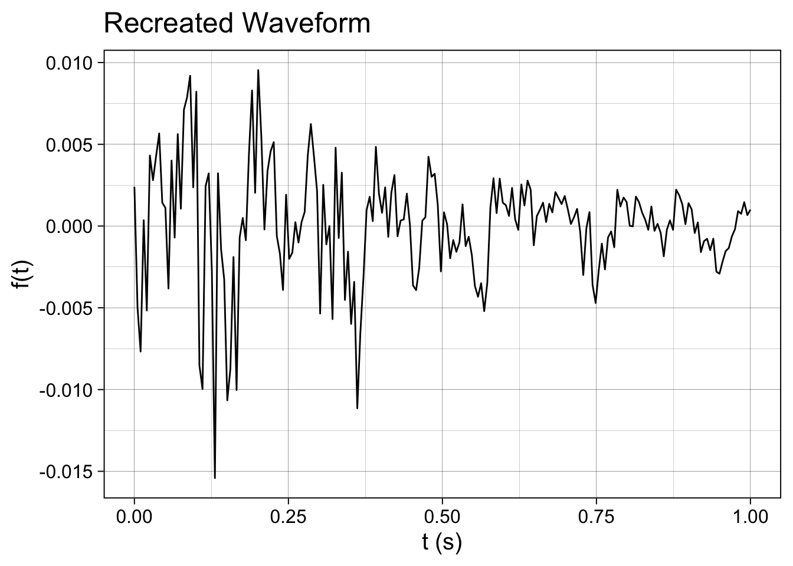
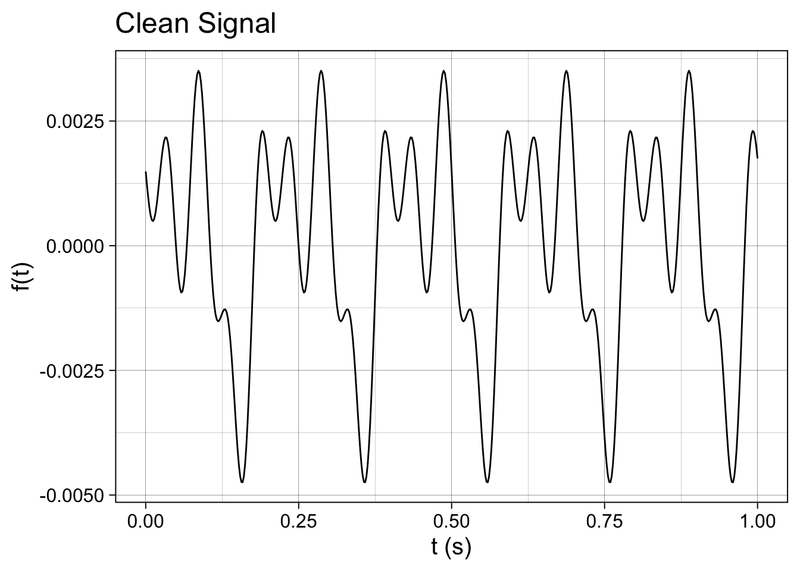
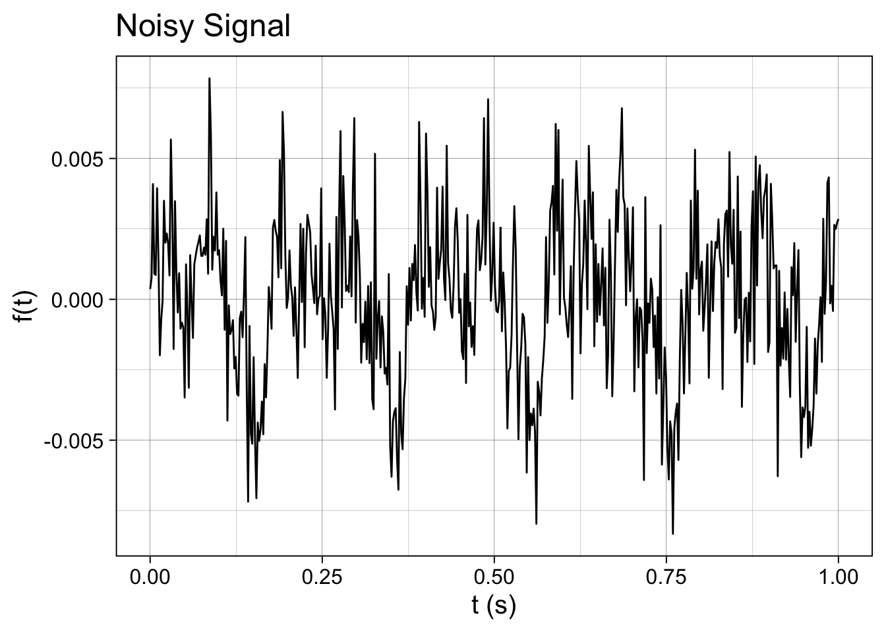
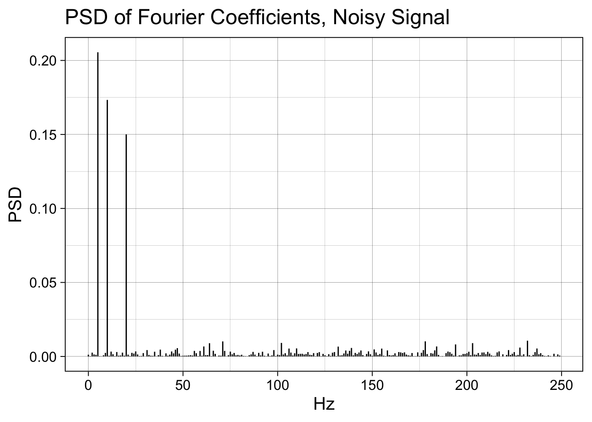
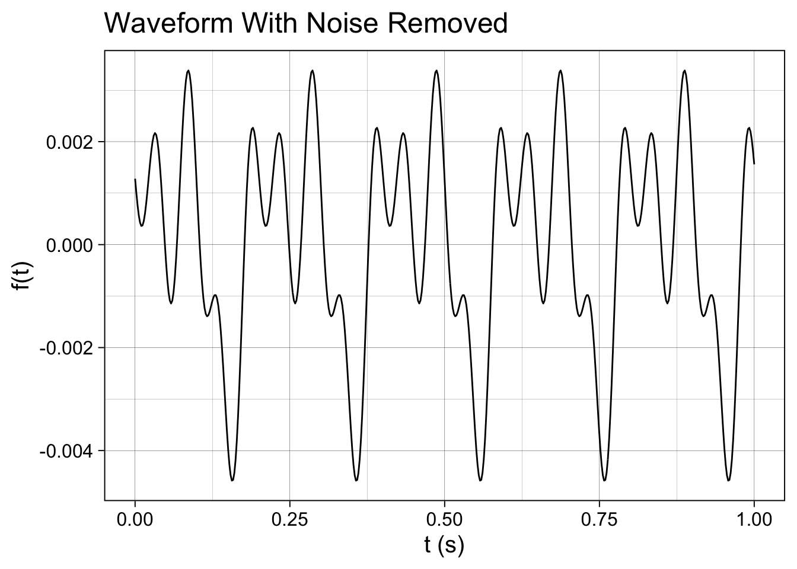

suppressPackageStartupMessages(library(fftpipe))
suppressPackageStartupMessages(library(tidyverse))
theme_set(theme_linedraw(base_size = 15))What is fftpipe?
fftpipe is a package of functions that wrap around the base R fft() function. The fftpipe package enables workflows around the fft() function that use the pipe (%>%) operator. I took inspiration for the interface to fftpipe from the Tidyverse and tidymodels packages.
Specifically, fftpipe offers the following functionality:
- Waveform generation,
- FFT and inverse FFT transformation,
- Plotting of these waveforms and FFTs.
Installation
Install fftpipe from GitHub with devtools. If you don’t have devtools installed already, install it with install.packages("devtools"). Once devtools is installed, you can then install fftpipe by typing the following command into the R console:
devtools::install_github("akey7/fftpipe")Quick Start
More detail about each of these steps is described below in this document. But this will get you started!
Load the necessary packages
While you can use fftpipe on its own, it is designed to work within the Tidyverse ecosystem, so I recommend you load the tidyverse as well. Also, I will set a theme for ggplot().
Generate a waveform
Waveforms can either be built from external data or synthesized from within the fftpipe package. For this quick start demo, let’s compose a waveform to feed into the FFT with the following properties:
- Its duration will be 1 second with a sample rate of 200 samples/second.
- It will be the sum of 2 cosines, with the second cosine being 3x the frequency and 50% the amplitude of the first cosine.
- Its total amplitude will decrease with an exponential decay function, with an exponential time constant (tau) of 0.5.
- The final result will be normalized by dividing the vector of values by the length of that vector to prepare the waveform for FFT.
We can compose this waveform using functions from fftpipe as shown in this code block:
wv <- waveform(duration_s = 1.0, sr = 100) %>%
cos_sum(freqs = c(2.0, 6.0), amplitudes = c(1.0, 0.9)) %>%
length_norm()Plot the input waveform
We can streamline plotting the input waveform with the following function call. This plot can be refined in ways I’ll describe later in the document.
waveform_plot(wv)
Perform the FFT
We can perform an FFT on the waveform we just made. To do that, run the following line:
wv_fft <- wv %>%
compute_fft()We can then use this FFT data.frame to plot the FFT and reconstruct the original waveform in the next two steps.
Plot the FFT
fft_plot() plots the FFT as shown below. By default, the plot only shows the frequency components that are at or below the Nyquist frequency (half the sample rate). Here, our sample rate is 100 Hz, so the maximum frequency is 50 Hz. This plot can be further customized, which will be shown later in the document.
Note how our original component cosines we summed together appear here as peaks at 2 Hz and 6 Hz. The first peak is taller than the second peak, which corresponds to our 6 Hz component having less amplitude than the 2 Hz component. Hence, our FFT captured the frequencies of our original waveform!
wv_fft %>%
fft_plot()Reconstruct the original waveform from the FFT
Finally, we can reconstruct the original waveform from the FFT. First, we need to make a waveform that defines the sample rate and values for the waveform to be reconstructed. This should match the waveform() call above. Then we need to feed both the new waveform and FFT into the inverse_FFT(). Then, we can pass the reconstruction through a length_norm() call and plot the reconstructed waveform.
waveform(duration_s = 1.0, sr = 100) %>%
inverse_fft(wv_fft) %>%
length_norm() %>%
waveform_plot()By using length_norm() before and after the FFT, the amplitudes of our waveform are the same before and after the FFT.
In Depth
In this section, I will go over the capabilities of the fftpipe package in more detail. This section will cover:
fftpipeis built around dataframes.- How do you customize plots made with
waveform_plot()andfft_plot()? - How do you compose a waveform with
waveform(),cos_sum(),exp_decay(),white_noise(), andlength_norm()? - How do you do FFT operations with
compute_fft()andinverse_fft(). What options are available forfft_plot()? - How do you do signal denoising with
denoise_fft()?
You can read the source code for all the functions on GitHub
fftpipe Is Built Around Dataframes
fftpipe functions pass data frames to each other with the pipe (%>%) operator. The columns differ depending on if a dataframe represents an FFT or a waveform. A waveform is what you pass into an FFT or get out of an inverse FFT.
Waveform dataframes contain the following columns:
| Column | Purpose |
|---|---|
.sample |
An index of the sample in waveform the row represents. |
.sec |
t: Time of that row in the waveform. |
.value |
f(t): Value of the waveform at that time. |
FFT dataframes contain the following columns:
| Column | Purpose |
|---|---|
.idx |
Index of the coefficient. Used to compute the frequency of each coefficient. |
.value |
The complex value of the Fourier coefficient. |
.psd |
The power spectral density of that Fourier coefficient. |
By passing these values around in dataframes, the functions of fftpipe can share data amongst themselves without needing the same information specified repeatedly in code.
How Do You Customize Plots?
The plots above showed some information but they were not great. The axes didn’t have descriptive labels and the plots lacked titles. Also, the theme was a bit drab. Let’s fix that!
The plots created by waveform_plot() and fft_plot() are simply ggplot objects that can be displayed or saved as you wish. Both waveform_plot() and fft_plot() accept ... arguments which are passed directly to the labs() function. Let’s generate a new waveform and then customize its plot
(You will see some new functions when we create the waveform; these will be explained later.)
wv_to_customize <- waveform(duration_s = 1.0, sr = 200) %>%
cos_sum(
freqs = c(5, 10, 20),
amplitudes = c(1.0, 0.875, 0.75),
phases = c(3*pi/2, 0, pi/2)
) %>%
exp_decay(decay_tau = 0.5) %>%
length_norm()
wv_to_customize %>%
waveform_plot()Since waveform_plot() and fft_plot() accept arguments to pass to label(), we can add labels to this plot. In your plots, you don’t need to specify all the labels, but I’ve put them all in here to demonstrate what you can do.
wv_to_customize %>%
waveform_plot(
title = "My Favorite Waveform!",
subtitle = "Let's Customize This Plot.",
caption = "Generated completely with fftpipe",
x = "t (s)",
y = "f(t)"
)Since this is just a ggplot object, we can add themeing:
wv_to_customize %>%
waveform_plot(
title = "My Favorite Waveform!",
subtitle = "Let's Customize This Plot.",
caption = "Generated completely with fftpipe",
x = "t (s)",
y = "f(t)"
) +
theme(
plot.title = element_text(face = "bold"),
plot.caption = element_text(colour = "blue", face = "bold")
)
For theming, the sky is the limit here. Go for it!
How Do You Compose a Waveform for Testing?
How do the functions waveform(), cos_sum(), exp_decay(), white_noise(), and length_norm() work together to make waveforms for testing? Let’s illustrate this with an example where we build operations up to make the example waveform shown in the plots above.
waveform() creates the primary attributes of a waveform: a duration in seconds and a sample rate. It also fills the values of the waveform with zero to enable further addition operations. Here, I define a waveform that is one second long with a sample rate of 200 Hz.
wv_to_customize <- waveform(duration_s = 1.0, sr = 200)
wv_to_customize %>%
waveform_plot()Now the waveform needs something. That is what cos_sum() is for. cos_sum() takes vectors of frequencies, amplitudes, and phases of cos() functions to sum into a final waveform. It sums them up and adds them to the incoming waveform which is specified by the first argument to the function:
wv_to_customize <- waveform(duration_s = 1.0, sr = 200) %>%
cos_sum(
freqs = c(5, 10, 20),
amplitudes = c(1.0, 0.875, 0.75),
phases = c(3*pi/2, 0, pi/2)
)
wv_to_customize %>%
waveform_plot(x = "t (s)", y = "f(t)")Now we have a waveform we can do something with. But there is still more that we can do!
We can add noise to the signal with white_noise(). Speicifcally, this function adds random numbers drawn from a normal distribution into the incoming waveform. It takes two arguments, both of which are optional: mean and sd. Adjusting sd is like adjusting the amplitude of the noise (lower values are less noise).
wv_to_customize <- waveform(duration_s = 1.0, sr = 200) %>%
cos_sum(
freqs = c(5, 10, 20),
amplitudes = c(1.0, 0.875, 0.75),
phases = c(3*pi/2, 0, pi/2)
) %>%
white_noise(mean = 0, sd = 1e-5)
wv_to_customize %>%
waveform_plot(x = "t (s)", y = "f(t)")We can multiply by an exponential decay to create a waveform whose amplitude diminishes over time with exp_decay(). In addition to an incoming dataframe which specifies a waveform, exp_decay() accepts one other parameter decay_tau which specifies the rate of decay (lower values mean faster decay rate).
wv_to_customize <- waveform(duration_s = 1.0, sr = 200) %>%
cos_sum(
freqs = c(5, 10, 20),
amplitudes = c(1.0, 0.875, 0.75),
phases = c(3*pi/2, 0, pi/2)
) %>%
white_noise(mean = 0, sd = 1e-5) %>%
exp_decay(decay_tau = 0.5)
wv_to_customize %>%
waveform_plot(x = "t (s)", y = "f(t)")
Finally, it’s good to normalize the waveform after creating it before applying a Fourier transform. A common technique I have seen is to divide each element of the signal’s vector by the length of the vector. This functionality is accomplished by the length_norm() function. Note how the amplitude drops in the following plot compared to the plots above.
wv_to_customize <- waveform(duration_s = 1.0, sr = 200) %>%
cos_sum(
freqs = c(5, 10, 20),
amplitudes = c(1.0, 0.875, 0.75),
phases = c(3*pi/2, 0, pi/2)
) %>%
white_noise(mean = 0, sd = 1e-5) %>%
exp_decay(decay_tau = 0.5) %>%
length_norm()
wv_to_customize %>%
waveform_plot(x = "t (s)", y = "f(t)")
All the steps except the waveform() creation are optional. Mix and match to your heart’s content!
How Do You Do FFT Operations?
compute_fft() and inverse_fft() perform fast fouriere transform (FFT) operations and the results can be plotted with fft_plot(). Fourier transforms, Fourier series, and Fourier analysis are HUGE topics that span many areas of math and physics. I won’t go into those applications here. But I will show you how to use these functions as fundamental building blocks as a starting point for more advanced FFT applications.
Let’s revisit our most recent waveform we generated:
wv_for_fft <- waveform(duration_s = 1.0, sr = 200) %>%
cos_sum(
freqs = c(5, 10, 20),
amplitudes = c(1.0, 0.875, 0.75),
phases = c(3*pi/2, 0, pi/2)
) %>%
white_noise(mean = 0, sd = 1e-5) %>%
exp_decay(decay_tau = 0.5) %>%
length_norm()
wv_for_fft %>%
waveform_plot(x = "t (s)", y = "f(t)")
We can take and plot the FFT of this waveform simply with compute_fft() (remember to length_norm() before you run an FFT). Here we will take our noisy signal, do an FFT, and make a PSD plpot of the first 100 Fourier coefficients:
our_first_fft <- wv_for_fft %>%
compute_fft()
our_first_fft %>%
fft_plot(show = "psd", x = "Hz", y = "PSD")
(Read below to find out how to remove noise with FFT denoising!)
Since there is more than just spectral density, we can also plot everything out of the FFT. What we will see is the real, imaginary, modulus of every Fourier coefficient as well as every PSD value.
our_first_fft %>%
fft_plot(show = "everything")
Now let’s go backwards with the inverse FFT to regenerate a waveform from FFT data. We do this with the inverse_fft() function. The inverse_fft() function is somewhat tricky: It takes a data.frame of an incoming FFT as the second argument, and a data.frame of an incoming waveform as the first argument. The waveform is necessary so that the inverse operation has somewhere to put the data; it must be a waveform compatible with the original waveform. Here waveform(duration_s = 1.0, sr = 200) is the same call we started the original waveform with. And, as usual, we will call length_norm() as the last step in producing a waveform.
wv_recreated <- waveform(duration_s = 1.0, sr = 200) %>%
inverse_fft(our_first_fft) %>%
length_norm()
wv_recreated %>%
waveform_plot(title = "Recreated Waveform", x = "t (s)", y = "f(t)")
Signal Denoising
Signal denoising is a simple way to remove noise from a signal through the following steps:1
- FFT the noisy signal
- Inspect the power spectral density (PSD) for each Fourier coefficient
- Observe that the coefficients encoding the signal have a higher PSD than the noise coefficients.
- Zero the coefficients that do not meet a PSD threshold.
- Run and inverse FFT to reconstruct a waveform with reduced noise.
All of these steps can be accomplished with functions in fftpipe.
Create Clean and Noisy Signals
Let’s make the sample rate higher than we have been using so far so that it can capture the high frequency white noise better. First, let’s make a clean signal and inspect its waveform and PSD plot.
wv <- waveform(duration_s = 1.0, sr = 500)
wv_clean <- wv %>%
cos_sum(
freqs = c(5, 10, 20),
amplitudes = c(1.0, 0.875, 0.75),
phases = c(3*pi/2, 0, pi/2)
)
wv_clean_fft <- wv_clean %>%
length_norm() %>%
compute_fft()Create the plots of the clean signal:
wv_clean %>%
length_norm() %>%
waveform_plot(
title = "Clean Signal",
x = "t (s)",
y = "f(t)"
)
wv_clean_fft %>%
fft_plot(title = "PSD of Fourier Coefficients, Clean Signal", x = "Hz", y = "PSD")Now let’s add some noise!
The white_noise() function adds noise from a Gaussian distribution to the signal.
set.seed(123)
wv_noisy <- wv_clean %>%
white_noise(mean = 0, sd = 1e-3) %>%
length_norm()
wv_noisy_fft <- wv_noisy %>%
compute_fft()As before, let’s plot the waveform and the PSD of the first half of Fourier coefficients.
wv_noisy %>%
waveform_plot(
title = "Noisy Signal",
x = "t (s)",
y = "f(t)"
)
wv_noisy_fft %>%
fft_plot(title = "PSD of Fourier Coefficients, Noisy Signal", x = "Hz", y = "PSD")
Note that a bunch of Fourier coefficients have lit up with very small PSD values. When we drop these coefficients to zero, we will recover clean Fourier coefficients. Then, when we do an inverse Fourier transform on the cleaned coefficients, we will recover the signal from the noise.
wv_noisy_but_cleaned <- wv_noisy_fft %>%
denoise_fft(psd_thresh = 5e-2) %>%
inverse_fft(wv, .) %>%
length_norm()
wv_noisy_but_cleaned %>%
waveform_plot(
title = "Waveform With Noise Removed",
x = "t (s)",
y = "f(t)"
)
Additional Resources
- Brunton, Steve. Denoising Data with FFT [Python] https://youtu.be/s2K1JfNR7Sc
- Neto, João, Fourier Transform: A R Tutorial http://www.di.fc.ul.pt/~jpn/r/fourier/fourier.html